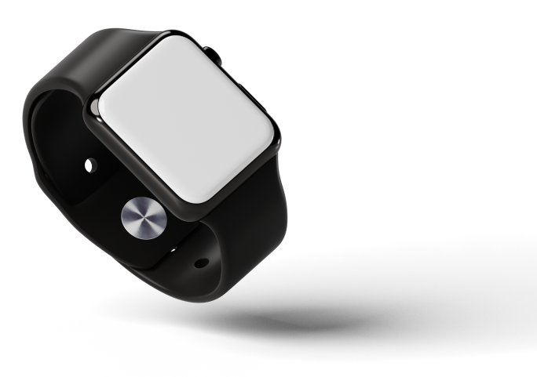

VotaryTech’s R&D team developing app-controlled miniature Servo Motors for smart Mechatronics solutions worldwide and Advanced algorithms for accurate calorie tracking.
Today’s generation is becoming more health-conscious to prevent health issues like Blood pressure and Diabetic problems. People are becoming, very serious to maintain their body immune system which will make them stronger internally and externally which will save them from thousands of disease. To maintain that fitness we make a proper diet plan & do the exercise like Running, Gym, Yoga and etc. till the results are monitored and activity is tracked, working out and diet will not be effective.
This will be of immense help to detect newly developed heart anomalies which are often painless conditions

We keep repeating that innovation runs in the DNA of Votarytech, we have a dedicated facility at Bangalore constantly innovating new platforms and solutions for mass production and feasible cost. We have a team of highly qualified and experienced professional’s working day in and day out to bring out the best in market solutions for our customers.
Our R&D team is currently developing a solution to control miniature Servo Motors using an App on the tablet or Smart Phone. These robotic looking Arms can be controlled in Horizontal and Vertical directions from 0 degree to 180 degree.